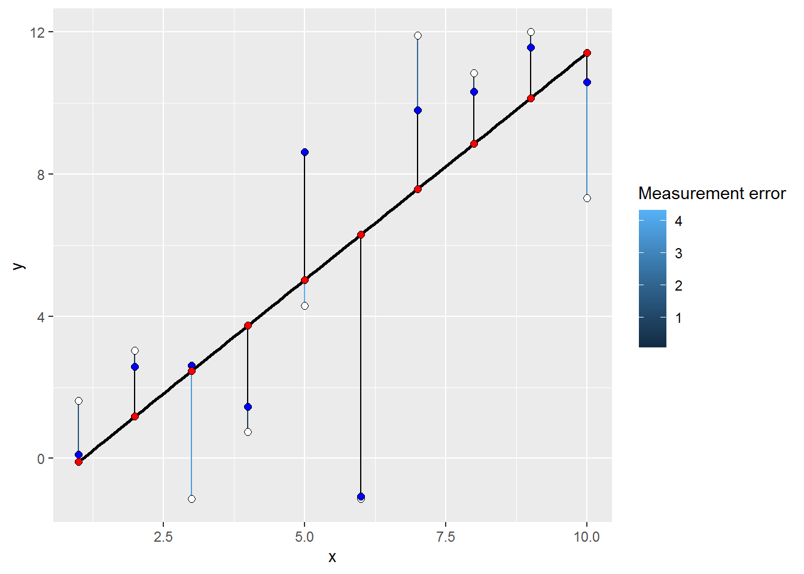

Chapter 11 Incorporating measurement error: a rubber band metaphor
One way to think about loss functions is as if they are rubber bands22 (black vertical segments) connecting observations (white dots) with its corresponding mean (red dots) on the regression line. Each band tries to pull the mean and, therefore, the regression line towards the observation and the final estimate is simply a minimal energy state: The total sum of pulling forces is minimal, so that any movement of the regression line would decrease the stretch for sum dots but will produce way more pulling for other dots, increasing the overall force. This is the “usual” way that we performed the regression analysis assuming that same rubber bands connect every dot with the regression line.
 Within this metaphor, measurement error is incorporated as additional inferred value (blue dots, true value of a measurement) that is connected to the observed value via a custom rubber band (colored) whose strength depends on the measurement error. I.e., large measurement errors make for a very weak stretchable bands, whereas high certainty leads to very small and strong bands. Note the connectivity pattern: observed value — (via custom rubber band) — (estimated) true value — (via common rubber band) — mean on the regression line. Here, dots with smaller measurement error will pull the regression line much stronger towards the observed value, whereas dots with large error will tolerate having regression line even very far away.
Within this metaphor, measurement error is incorporated as additional inferred value (blue dots, true value of a measurement) that is connected to the observed value via a custom rubber band (colored) whose strength depends on the measurement error. I.e., large measurement errors make for a very weak stretchable bands, whereas high certainty leads to very small and strong bands. Note the connectivity pattern: observed value — (via custom rubber band) — (estimated) true value — (via common rubber band) — mean on the regression line. Here, dots with smaller measurement error will pull the regression line much stronger towards the observed value, whereas dots with large error will tolerate having regression line even very far away.

Note that in some cases, information about measurement error is incorporated directly. For example, in binomial likelihood the number of successes and the total number of observations determine not only the proportion of success but also confidence about that value.
As Hook’s law is a first-order linear approximation, this metaphor works fully only if we assume L1 distance, i.e., that error increases / probability decreases linearly with distance. Still you could imagine a better rubber band whose force will be proportional to the squared (L2) distance, as for the normal likelihood.↩︎